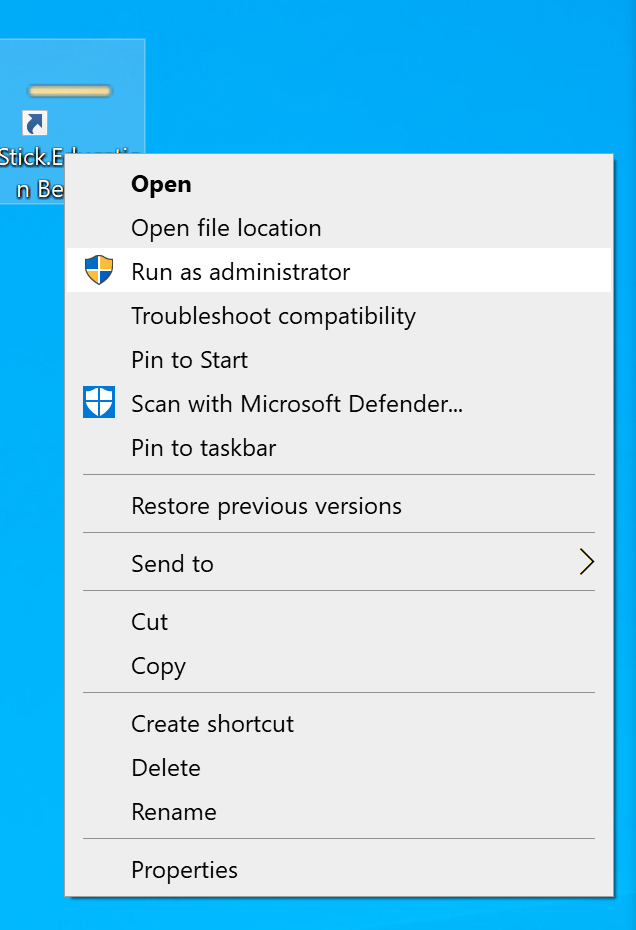
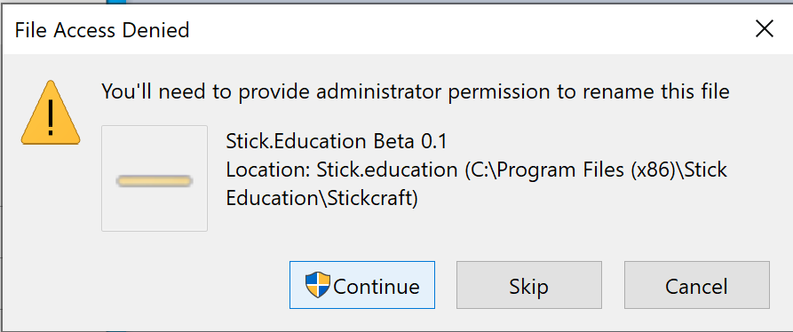

This version is currently only available for Windows 64-bit, tested on Windows 10. Please note that this is a beta version, and Windows may not recognize it as a certified application.
To use the hardware, ensure you are connected to the internet. Open the application as an administrator before connecting the hardware. This is necessary for the automatic installation of the board's driver and USB.
Load the code into the board. We are actively working on obtaining certification and improving the installation process to enhance user experience.
This is an initial release, and we appreciate your patience. More versions will be released soon.
Download NowTo run the application as an administrator, right-click on the application icon and select "Run as administrator" as shown below:
When installing, you might see the following prompt. Please click "Continue" to proceed with the installation:
